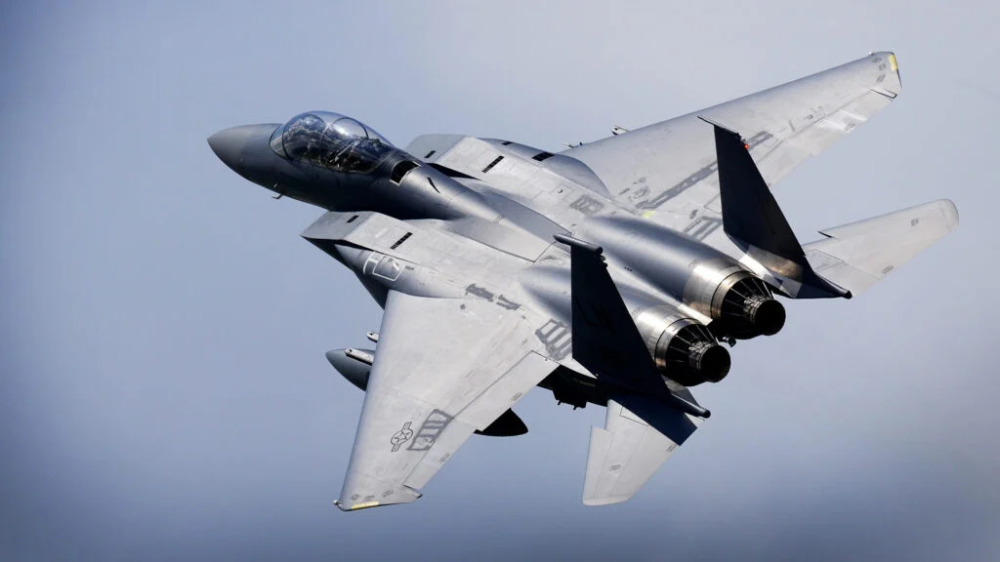

F15 Eagle

The McDonnell Douglas F-15 Eagle is an American twin-engine, all-weather tactical fighter aircraft designed by McDonnell Douglas. Following reviews of proposals, the United States Air Force selected McDonnell Douglas's design in 1969 to meet the service's need for a dedicated air superiority fighter./p>